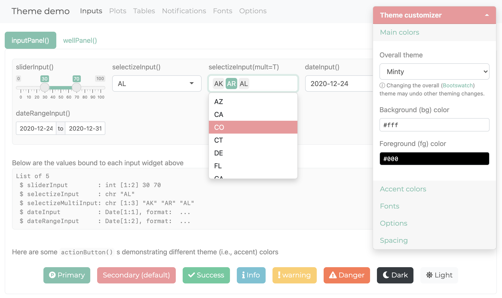
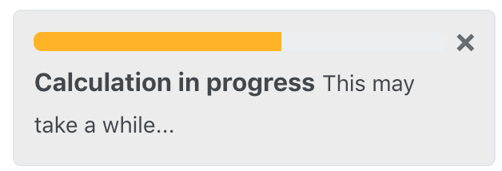

As we learned in Basic usage, any usage of bslib with Shiny and R Markdown is powered by bs_theme(). Here you can pick a major Bootstrap version, choose a pre-packaged Bootswatch theme, and/or customize various theming defaults. bslib even provides a interactive widget (bs_themer()) to change some of bs_theme()’s options real-time.
In some more advanced cases, you might also want to know how to add additional Sass/CSS rules, leverage utility classes, and develop custom (themeable) components.
Bootstrap versions
At the time of writing, bslib currently supports:
-
Bootstrap 5
bs_theme(version = 5): intended for new projects. -
Bootstrap 4
bs_theme(version = 4): intended for legacy projects that happen to break withversion = 5. -
Bootstrap 3
bs_theme(version = 3): intended for legacy projects that happen to break withversion = 4.
bslib doesn’t require that you actually specify a Bootstrap version. In that case, it provides the currently recommended version of Bootstrap for new projects. Currently Bootstrap 4 is recommended, but that will soon change to Bootstrap 5+ in future releases, so it’s best practice to specify the version, especially if reproducibility is important and your project does any of the following:
- Uses Bootstrap Sass variables directly.
- Uses utility classes.
- Adds custom HTML, CSS, or JavaScript that builds on Bootstrap.
Bootswatch themes
Any Bootswatch theme is available through bs_theme()’s bootswatch argument. You may already be familiar with using these “pre-packaged” themes via the shinythemes package (or via the theme parameter in R Markdown). Those legacy approaches only provide Bootswatch 3 themes, but with bslib, you can use newer themes like minty.
# Shiny usage
navbarPage(
theme = bs_theme(bootswatch = "minty"),
...
)
Custom themes
In addition to version and bootswatch, bs_theme() has some other named arguments for customizing main colors and fonts. These named arguments (e.g., bg, fg, base_font, etc) are supported across Bootstrap versions, making them useful for both new and legacy projects. If you’re looking to customize lower-level aspects (e.g., headings, navbars, etc), then you’ll want to know how to work with Sass variables more directly. Also, in the event that no Sass variable is available to meet your theming needs, you may need to write additional CSS rules and/or leverage utility classes.
Main colors & fonts
bs_theme() provides named arguments for customizing the main background color (bg), foreground color (fg), accent colors (primary, secondary, etc), and fonts (base_font, heading_font, code_font, etc). Here’s an example of using a subset of these named arguments to implement a dark mode with custom fonts:
# Shiny usage
navbarPage(
theme = bs_theme(
bg = "#101010",
fg = "#FDF7F7",
primary = "#ED79F9",
base_font = font_google("Prompt"),
code_font = font_google("JetBrains Mono")
),
...
)
Among all the coloring options in bs_theme(), bg, fg, and primary are by far the most influential as they effect nearly every color on the page. In fact, bg and fg alone impact 100s of defaults — everything from panels (e.g., shiny::wellPanel(), shiny::inputPanel(), etc) to navigation (e.g., shiny::navbarPage(), shiny::tabsetPanel(), etc) and more. The accent colors don’t impact nearly as much, but primary does control the color for some important things like hyperlinks, shiny::tabsetPanel() links, accent/focus colors for inputs, and more. That being said, other accent colors can be handy for customizing things like shiny::actionButton() (defaults to the secondary color), shiny::showNotification() , or more generally any HTML content that leverages Color Utility Classes.
When choosing bg and fg colors, keep in mind that it’s generally a good idea to pick colors with a similar hue but a large difference in their luminance.
bs_theme() also provides 3 named arguments for main fonts: base_font, heading_font, and code_font. When using web safe font combinations, it’s ok to provide a character string of (comma-separated) font families to these arguments (e.g., bs_theme(base_font = '"Times New Roman", Times, serif'). Otherwise, use one of the font_google(), font_link(), and/or font_face() helpers to include the relevant file(s) so the client’s browser may render the font(s). font_link() and font_face() are fairly low-level interfaces to the CSS web font API, but font_google() has the additional ability to download and cache font file(s), making it so that an internet connection is needed only for the first time a particular font is used.
When choosing fonts, keep in mind that it’s generally good practice to put serif fonts in base_font, sans-serif fonts in heading_font, and monospace fonts in code_font. If you aren’t sure where to start, this article has a nice gallery of Google Font pairings.
Everything else
bs_theme() also provides access to 100s of more specific theming options by considering anything passed through it’s ... argument to be a new Bootstrap Sass variable defaults. This allows you to get more targetted with your theming; for example, let’s set the $progress-bar-bg Sass variable to 'orange' (a CSS color).
# Shiny usage
bs_theme(
bg = "#002B36", fg = "#EEE8D5",
"progress-bar-bg" = "orange"
)
In addition to CSS values (e.g., "orange"), a variable can be any valid Sass expression, which is quite useful for leveraging Sass’ built-in module’s (e.g., mix() for mixing colors)
bs_theme("progress-bar-bg" = "mix(white, orange, 20%)")
#> $progress-bar-bg: mix(white, orange, 20%) !default;
#> @import "scss/_variables.scss";Underneath the hood, bs_theme() works by placing Sass variable defaults before Bootstrap’s variable defaults. That’s why something like bs_theme(primary = "red") “just works” in the sense that it not only provides $primary with a new default value, but it also passes the value to other variables that default to $primary (e.g. $progress-bar-bg).
# Reduced version of the Sass code behind `bs_theme(primary = "red")`
sass::sass("
$primary: red !default; // First one wins
$primary: blue !default;
$progress-bar-bg: $primary !default;
@debug $primary, $progress-bar-bg;
")
#> red, redSince bs_theme() defines variables before Bootstrap, we must define variables differently if they want to reference Bootstrap’s Sass code. For example, what if we wanted $progress-bar-bg to default to $secondary instead of $primary?
Thankfully bs_add_variables() provides a workaround. By default, bs_add_variables() works just like bs_theme() (it puts variable definitions before other Sass code), but by with .where = "declarations", we can place the definition after Bootstrap:
bs_add_variables(bs_theme(), "progress-bar-bg" = "$secondary", .where = "declarations")
#> @import "scss/_variables.scss";
#> $progress-bar-bg: $secondary;There’s currently no easy way to define variables this way in R Markdown (other than using !expr to pass a bs_theme() object directly into theme)
Real-time theming
Use bs_theme_preview() (or bs_themer()) to create custom themes in “real-time” via an interactive theming widget. The former overlays the widget on a demo Shiny app (see here for a hosted version):

The latter (bs_themer()) may be used with any Shiny app or R Markdown document. Just make sure you’re providing Bootstrap 4 (or higher) to the page constructor and call bs_themer() in a Shiny runtime content (i.e., within the server function).
# Shiny usage
ui <- navbarPage(
theme = bs_theme(),
...
)
server <- function(input, output) {
bs_themer()
...
}# R Markdown usage
---
runtime: shiny
output:
html_document:
theme:
bslib: true
---
```{r}
bslib::bs_themer()
```
By the way, when running the real-time themer locally in a Shiny app, you’ll see output like this in your R console (in R Markdown, you’ll see YAML output instead of R code) to reproduce the theming changes:

Dynamic theming
The functionality behind real-time theming can be leveraged in any Shiny app (or runtime:shiny Rmd doc) to implement your own custom theming widget (via session$setCurrentTheme()), like a dark mode switch:
light <- bs_theme()
dark <- bs_theme(bg = "black", fg = "white", primary = "purple")
ui <- fluidPage(
theme = light,
checkboxInput("dark_mode", "Dark mode")
)
server <- function(input, output, session) {
observe(session$setCurrentTheme(
if (isTRUE(input$dark_mode)) dark else light
))
}
shinyApp(ui, server)
See the sections on setCurrentTheme and getCurrentTheme here to learn more.
Advanced theming
Adding rules
A good amount of theming is possible by customizing Bootstrap Sass variables in bs_theme(), but sometimes you may also want to add additional Sass/CSS rules. The bs_add_rules() function makes this easy for Shiny usage. Here’s an example of adding nes.css, which adds additional styles for things like the mouse cursor (on top of bs_theme()s theming options).
bs_theme(
bg = "#e5e5e5", fg = "#0d0c0c", primary = "#dd2020",
base_font = font_google("Press Start 2P"),
code_font = font_google("Press Start 2P"),
"font-size-base" = "0.75rem", "enable-rounded" = FALSE
) %>%
bs_add_rules(
'@import "https://unpkg.com/nes.css@latest/css/nes.min.css"'
)
In the R Markdown case, it’s recommended that additional CSS (or Sass) rules come through the css parameter, but you may also use the bslib engine. As with bs_add_rules(), these rules can reference Bootstrap Sass variables as well as utilize convenient Sass mixins or functions like color-contrast(), mix(), etc.
---
output:
html_document:
theme:
version: 4
css: my-rules.scss
---
```{bslib}
$custom-bg: rgba($primary, 0.3);
.custom {
background-color: $custom-bg;
color: color-contrast(opaque($body-bg, $custom-bg))
}
```
::: {.custom}
Hello custom block with custom styles!
:::
Utility Classes
With Bootstrap 4 (or higher), you can use utility classes to easily add or subtract styles on specific elements to handle common UI problems like spacing, border, colors, and more. See the article on Utility Classes for some useful examples specific to Shiny and R Markdown.
Component support
Below is a list of known-to-be themeable HTML components that “just work” well with custom real-time themes:
-
All of “core” Shiny UI (e.g.,
sliderInput(),selectInput(),tabPanel(),navbarPage(), etc.)- The one exception is
plotOutput(), but in that case, the{thematic}package can be used to essentially translate CSS to R plot theming defaults. Just putthematic_shiny()in your Shiny apps andthematic_rmd()in your R Markdown documents.
- The one exception is
All of
rmarkdown::html_document()specific features as well as{flexdashboard}.Any un-styled HTML content (e.g.,
tags$input(type = "checkbox")).Some htmlwidgets like DT and plotly (only
ggplotly()is supported through thematic right now)
Over time, we’re hoping this list grows as package authors and developers embrace bslib’s tools for making themeable custom components.